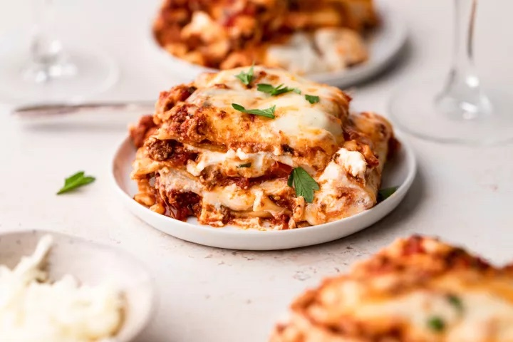

Lasagna!

A tasty Lasagna made for quickly.
Quick and easy to make, this lasagna packs a punch for taste and fuel. Plenty of optional extras make this a recipe to easily tweak and make your own.
Ingredeients
- 500g Ground beef
- 1 Can tomato sauce
- Shredded Cheese
Steps
- Brown ground beef.
- Stir in Sauce until simmer